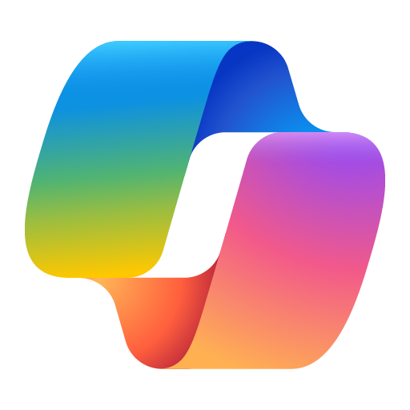
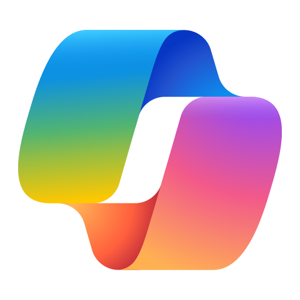

Hola, soy
Brayden Reimann.
CS @ Purdue | Pasante desarollador de software


Hola, soy
Soy de Huntingburg, Indiana y estudio la ciencia de computación en la universidad de Purdue. Ahorita estoy trabajando como desarollador de software en Jasper Engines, y es mi plan persigir posiciones parecidos despues de graduarme.
Aunque soy programador y aficionado de la tecnología, también soy apasionado por las humanidades. Junto a mi especialidad principal, persigo una licencia en letras en español, lo cual he estado estudiando y hablando por más que seís años. Además, contribuyé al Purdue Exponent, reportando sobre un variedad de sujetos incluso investigación de los semiconductores y el crisis de alojamiento estudiantil.
Fuera de la escuela, me gusta cocinar, viajar, leer, y pasear en bicicleta. En 2025, voy a estudiar en un país de América Latina, en el cual continuaré mis estudios y perfeccionaré mi competencia en español para el ámbito laboral.
Estoy emocionado por trabajar como desarrollador después de graduarme. Estamos en medio de una revolución tecnológica—definida por nuevas tecnologías como IA generativa, computación en la nube y computación espacial.
No puedo esperar a desarrollar productos que utilicen estas herramientas y para crear mi propio pequeño impacto en el futuro.


Mis proyectos abarcan interfaces front-end, desarollo API, integración de bases de datos, y más, dándome experiencia real con software de grado producción.


 



Es con mucha frecuencia que trabajo con herramientas como Azure, Blazor, Cosmos DB, y Azure DevOps para construir y implementar soluciones de software escalables y nativas en la nube.
Para mantenerse actualizado, exploro los mejores prácticas modernas, estudio patrones de arquitectura de software, y uso herramientas impulsadas por IA como Copilot y ChatGPT para investigar conceptos desconocidos mientras que construir.

Beekeeper is a full-stack web application designed for Bee Native Farms, owned an operated by my dad, Jonathan. When finished, it will include tools for managing inventory, customers, transactions, and more, enabling greater productivity by reducing time spent book-keeping.
Beekeeper es un aplicatción web de pila completa desiñado por Bee Native Farms, propiedad de mi padre, Jonathan. Cuando termine, incluirá herramientas para gestionar el inventorio, clientes, transacciones, y más, permitiendo mayor productividad por reducir la cantidad de tiempo gastado en la contabilidad.

Decidí empezar este proyecto porque quería aprender cómo construir un sitio web desde cero con solamente HTML, CSS y JavaScript. Me encontré abrumado por la pila de desarrollo web, y por eso decidí que no usaría ningún framework para construirlo.
Aprendí mucho en el proceso de construirlo y ahora tengo confianza en mi habilidad para usar estas herramientas en el ámbito laboral y en proyectos personales más complicados.
Teléfono: (812) 351-1082
Correo Electrónico: braydenreimann@icloud.com
WhatsApp: (812) 351-1082